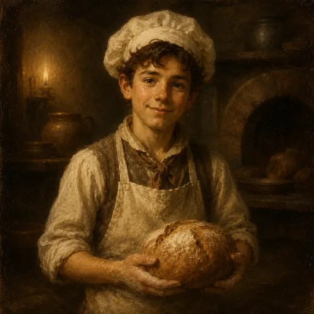

떠돌이 견습생

다음 무대: 포장마차
동네 배달
남은 시간 00:00
예상 보상 0
보유 레시피 0개 (생산량 +0%)
간식 공방 키우기는 랭킹 대상이 아니에요. 연결하면 주간 누적 생산량이 참여 기록으로만 서버에 남아요.
퀘스트를 불러오는 중이에요.
보상 0
돌아오신 걸 환영해요
승급
비법 레시피
처음부터 다시 시작
비법 레시피를 포함해 모든 진행 상태가 삭제돼요. 되돌릴 수 없어요.